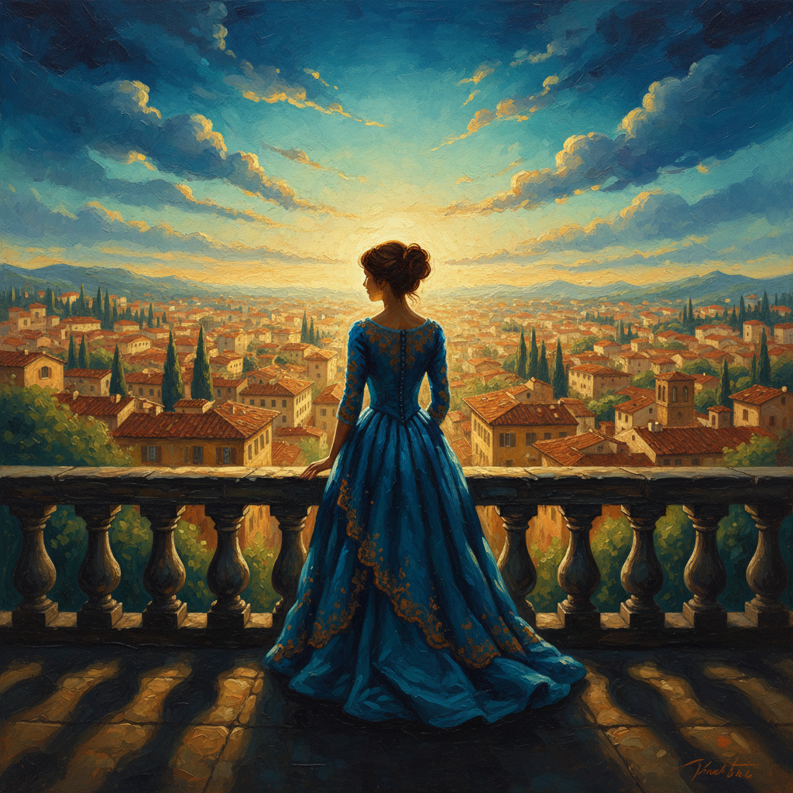
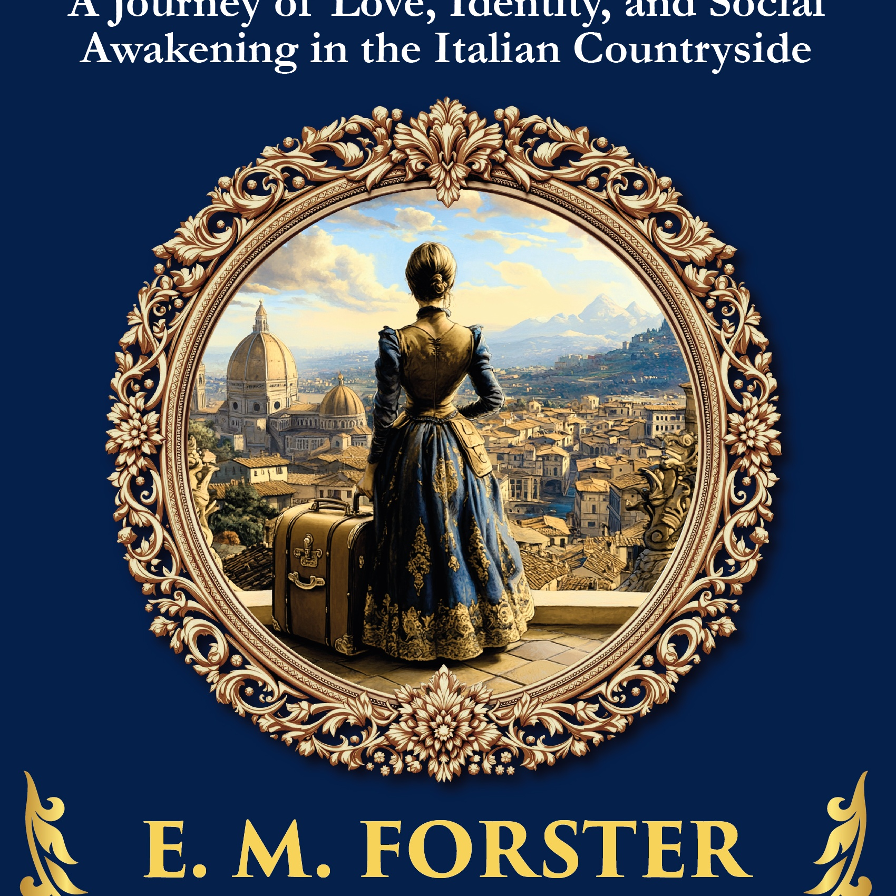

Book 1: A Room with a View — E. M. Forster
Original Cover Template

Source JPG (Illustrator)
Raw AI Art

Generated by Gemini
Composited Result

Frame Preserved
Medallion Close-Up: Before vs After
The golden ring with beads, crown motifs, and scrollwork is 100% preserved from the original. AI art fills the full medallion opening with a smooth feathered transition at the ring edge.
Before (Original Placeholder Art)

Reference
After (New AI Art Composited)

Ring Intact
Frame ring changed: 0.00%
Art colors: Pixel-perfect
Output: 3784x2777 @ 300 DPI
Click any image to zoom in for detail
What Was Fixed
Root cause: The original compositor used a hardcoded circle at r=945 to place AI art. This circle extended into the ornamental ring band, overwriting the beaded ring, crown motifs, and floral details with AI art.
The fix: A hybrid two-mask approach that protects every frame element:
- Cross-book comparison mask — compares two books' originals pixel-by-pixel to identify exactly which pixels are frame (identical across books) vs art (different). Eroded by 3px and feathered for clean edges.
- Geometric circle at r=920 — protects the beaded ring (which the SMask treats as "art visible"). Feathered 15px for smooth transition hidden under the ring edge.
- SMask threshold at 0.72 — protects irregular scrollwork ornaments from the PDF's built-in mask created by Adobe Illustrator.
- Art fidelity — removed edge trimming and margin cropping. AI art colors are now identical to the generated image.
- CMYK black generation — fixed Pillow's broken RGB→CMYK conversion (K was always 0) with proper ICC profile or manual GCR fallback.
Files changed: src/pdf_compositor.py, src/pdf_swap_compositor.py, src/export_ingram.py